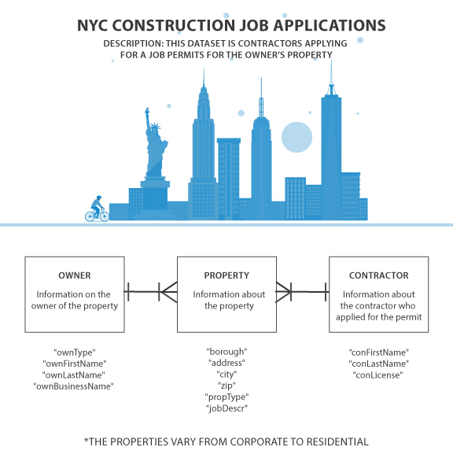

I began with finding a dataset from New York DOB Job Application Filings . This dataset contains all job applications submitted through the Borough Offices, through eFiling, or through the HUB, which have a "Latest Action Date" since January 1, 2000.
The first thing I had to do was look through the data to see what I could do with it. The naming of the fields were not fully consistent and there was many variety of fields some were repeats.